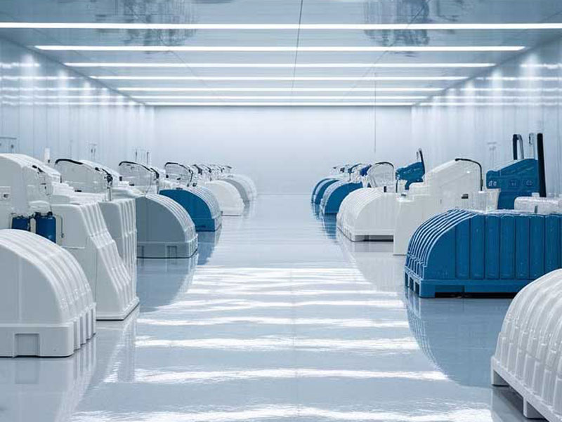
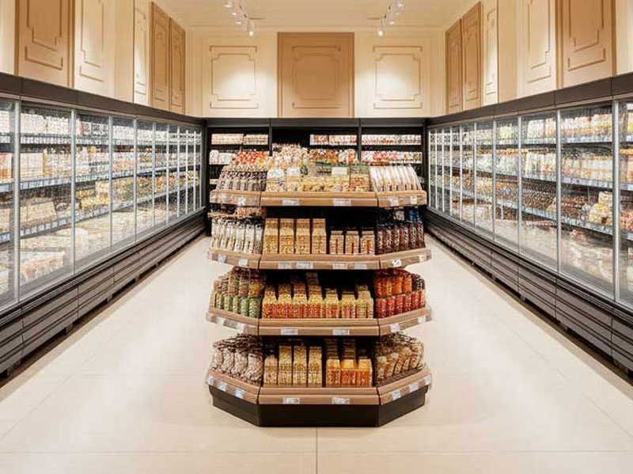
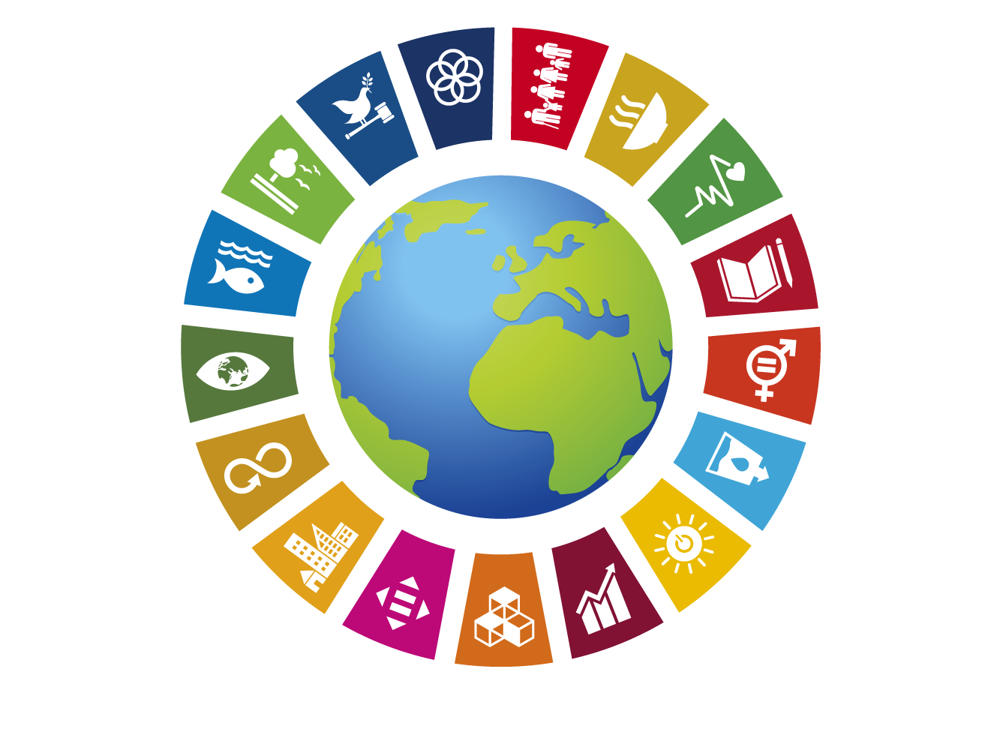
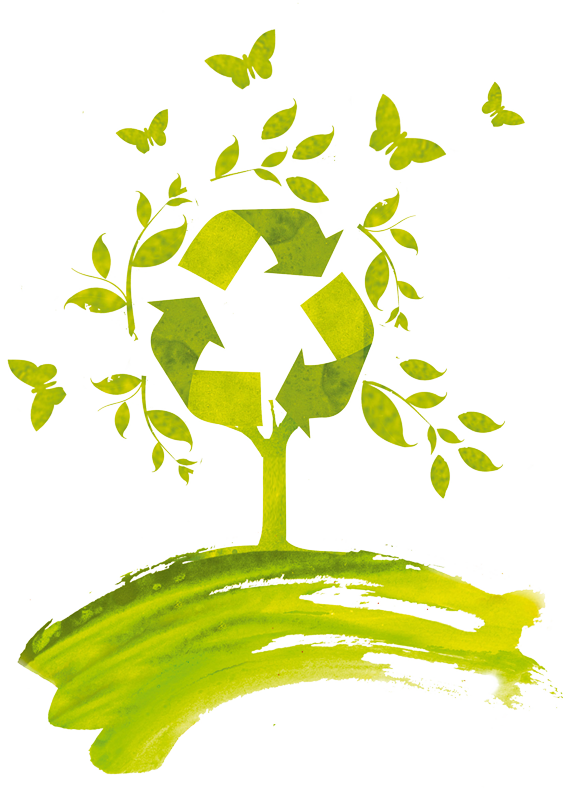

脱プラスチックの新素材 MiCb
新しいバイオプラスチック素材「MiCb」
MiCb（ミックビー）
今、対策を始めましょう。
未来の健康を守るために、脱プラスチックの選択を。
MiCbは、光、熱、風、水などの環境要因に反応してマイナス電子を発生させ、抗菌、防臭、防カビ、帯電防止、酸化抑制などの多機能を持ちます。これにより、O-157やノロウイルスへの対応として注目されており、シックハウス症候群の一因とされるホルムアルデヒドへの取り組みにも活用の可能性が考えられています。
さらに、MiCbは人体や環境にも優しく、廃棄時には土中で完全に分解され、無害な堆肥として利用可能です。そのため、農業資材や医療・介護用シート、衣類、建材など、幅広い分野での活用が期待されています。
このように、MiCbは環境負荷の低減と生活の質向上を両立させる次世代素材として注目されています。
MiCb の主な特徴
- 完全生分解性と抗菌作用を両立した新素材
- 180日で土中で分解され、分解後の土は肥沃になる
- 海洋汚染を引き起こさず、焼却時のCO2排出量も少ない
- 免疫に関する基礎的な研究で注目されている成分を含む
- 抗菌・防カビ効果を持つ

MiCb の用途
- 日用品（ゴミ袋、ストロー、食品容器など）
- 工業用部品（自動車内装、家電部品）
- 建設・土木資材
- 農業用資材（ポット、ビニールハウス用シート）
- 衣料品
- 医療・衛生用品
- おもちゃなど

あなたの脳に“プラスチック”が蓄積しているかもしれません。
近年の研究で、ナノプラスチックが脳にまで侵入し、認知症や脳機能の低下と関連している可能性が示されました。腎臓や肝臓よりも7〜30倍も多くのプラスチック片が脳内に蓄積していたという衝撃の事実。一部のサンプルでは、脳重量の約0.5%がプラスチックだったという報告も。
私たちの生活に潜む見えないリスク。飲料、空気、食品包装、ティーバッグ――日常のあらゆる場面で、あなたはナノプラスチックにさらされています。
ナノプラスチックとは？ どこから出てくるの？ 体にどう入るの？ どんな危険があるの？
ナノプラスチックとは、サイズが1ナノメートル（nm）〜1000ナノメートル（＝1ミリメートルの100万分の1）の超微小なプラスチックの粒子です。
※髪の毛の太さが約7万ナノメートルと言われているので、それよりずっと小さい粒です。
ナノプラスチックは、主に次のような経路で発生します
- プラスチック製品が劣化して分解されるとき（ペットボトル、ビニール袋、衣類など）
- 化粧品や洗剤に含まれる微粒子（マイクロビーズなどがさらに細かくなる）
- ごみ焼却、摩擦、風化などによる破片の発生
ナノプラスチックはあまりに小さいため、食べ物、飲み水、空気、皮膚などから人の体内に入り込むことがあります。特に食べ物や包装からの摂取、空気中の吸引が主な経路です。
さらにナノプラスチックは：
- 血流を妨げる
- 神経細胞を傷つける
- 心筋梗塞・脳卒中リスクを約4.5倍に上昇
- 内分泌撹乱によるホルモン異常や生殖機能の低下
脱プラスチックの世界的な動き
- 2023年に6ヵ国がプラスチック製品の製造・販売を禁止
- 175ヵ国が2024年までに国際法的協定を策定する決議
- フランスなどが段階的にプラスチック製品を禁止
- 日本は対応が遅れており、レジ袋有料化は2020年から開始

MiCb の課題と今後の展開
- 120℃以上の耐熱性が必要な用途には未対応
- 透明度や耐久性で従来プラスチックに劣る部分あり
医療用品、農業資材、食品包装など様々な分野での活用が期待されます。
